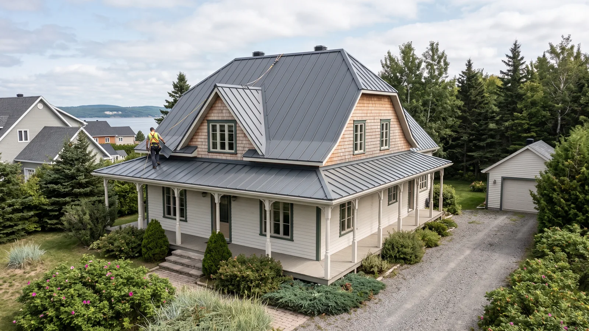
regions · bas-saint-laurentMaison québécoise avec toiture en pente dans un secteur résidentiel du Bas-Saint-Laurent, végétation maritime discrète. Photographie documentaire immobilière haut de gamme, réaliste, lumière naturelle, maison québécoise crédible, toiture et détails constructifs cohérents, composition horizontale 16:9, palette ardoise et cuivre discrète, aucun texte lisible, aucun logo, aucune enseigne, aucune adresse, aucun monument reconnaissable. Si un couvreur apparaît, il est de taille réaliste, vu à distance et utilise une protection antichute conforme; aucun outil lumineux en plein jour.
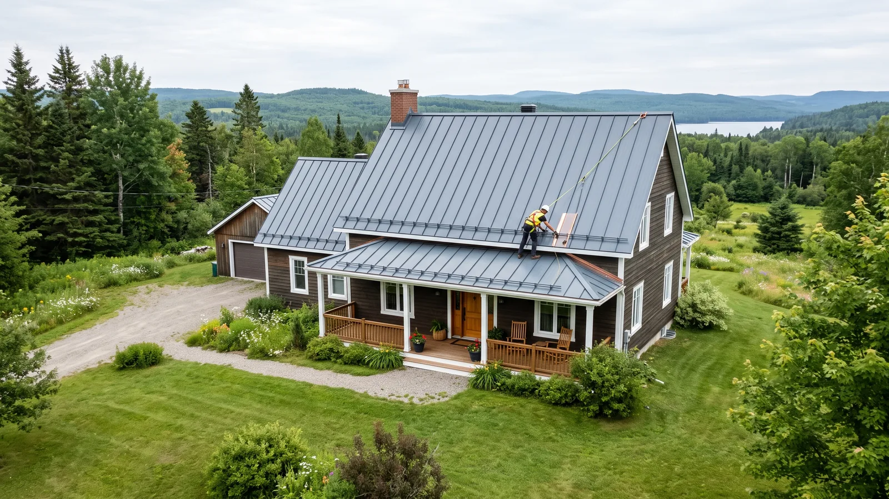
regions · saguenay-lac-saint-jeanMaison familiale au Saguenay–Lac-Saint-Jean avec toiture robuste et terrain spacieux, lumière nordique naturelle. Photographie documentaire immobilière haut de gamme, réaliste, lumière naturelle, maison québécoise crédible, toiture et détails constructifs cohérents, composition horizontale 16:9, palette ardoise et cuivre discrète, aucun texte lisible, aucun logo, aucune enseigne, aucune adresse, aucun monument reconnaissable. Si un couvreur apparaît, il est de taille réaliste, vu à distance et utilise une protection antichute conforme; aucun outil lumineux en plein jour.
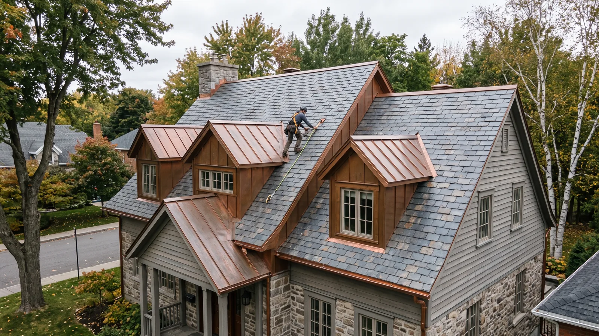
regions · capitale-nationaleToiture d'une maison résidentielle de la Capitale-Nationale, mélange sobre d'architecture ancienne et récente. Photographie documentaire immobilière haut de gamme, réaliste, lumière naturelle, maison québécoise crédible, toiture et détails constructifs cohérents, composition horizontale 16:9, palette ardoise et cuivre discrète, aucun texte lisible, aucun logo, aucune enseigne, aucune adresse, aucun monument reconnaissable. Si un couvreur apparaît, il est de taille réaliste, vu à distance et utilise une protection antichute conforme; aucun outil lumineux en plein jour.
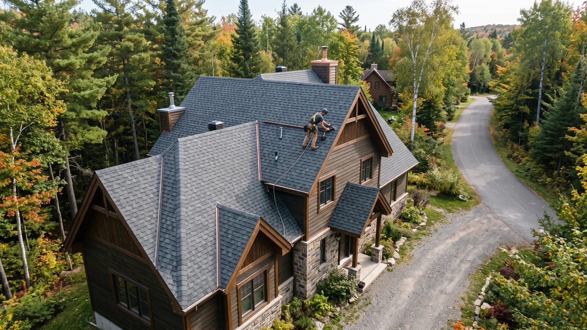
regions · mauricieMaison en Mauricie avec toiture en bardeau et environnement résidentiel boisé, angle montrant clairement les versants. Photographie documentaire immobilière haut de gamme, réaliste, lumière naturelle, maison québécoise crédible, toiture et détails constructifs cohérents, composition horizontale 16:9, palette ardoise et cuivre discrète, aucun texte lisible, aucun logo, aucune enseigne, aucune adresse, aucun monument reconnaissable. Si un couvreur apparaît, il est de taille réaliste, vu à distance et utilise une protection antichute conforme; aucun outil lumineux en plein jour.
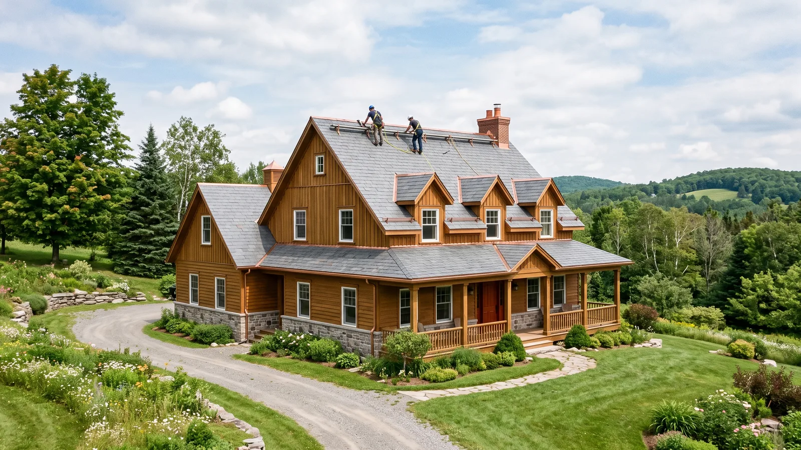
regions · estrieMaison en Estrie sur terrain légèrement vallonné, toiture en pente bien visible et architecture locale crédible. Photographie documentaire immobilière haut de gamme, réaliste, lumière naturelle, maison québécoise crédible, toiture et détails constructifs cohérents, composition horizontale 16:9, palette ardoise et cuivre discrète, aucun texte lisible, aucun logo, aucune enseigne, aucune adresse, aucun monument reconnaissable. Si un couvreur apparaît, il est de taille réaliste, vu à distance et utilise une protection antichute conforme; aucun outil lumineux en plein jour.
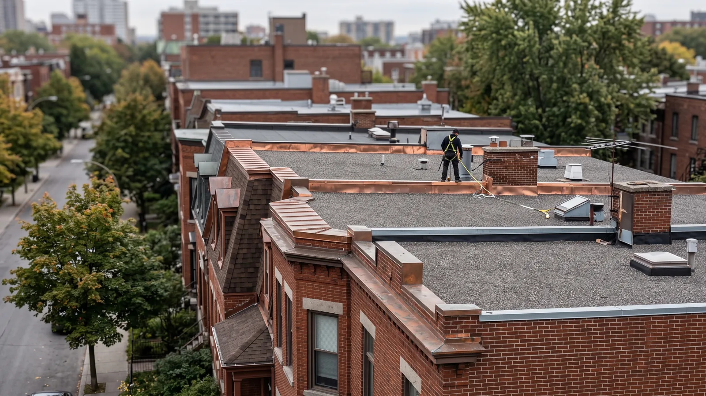
regions · montrealToitures d'un duplex ou triplex montréalais en brique dans une rue urbaine calme, sans adresse visible. Photographie documentaire immobilière haut de gamme, réaliste, lumière naturelle, maison québécoise crédible, toiture et détails constructifs cohérents, composition horizontale 16:9, palette ardoise et cuivre discrète, aucun texte lisible, aucun logo, aucune enseigne, aucune adresse, aucun monument reconnaissable. Si un couvreur apparaît, il est de taille réaliste, vu à distance et utilise une protection antichute conforme; aucun outil lumineux en plein jour.
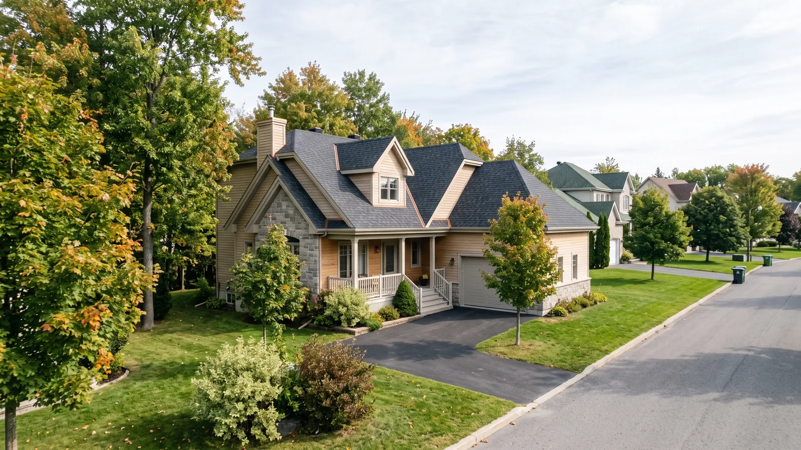
regions · outaouaisMaison familiale en Outaouais, toiture récente et quartier résidentiel verdoyant. Photographie documentaire immobilière haut de gamme, réaliste, lumière naturelle, maison québécoise crédible, toiture et détails constructifs cohérents, composition horizontale 16:9, palette ardoise et cuivre discrète, aucun texte lisible, aucun logo, aucune enseigne, aucune adresse, aucun monument reconnaissable. Si un couvreur apparaît, il est de taille réaliste, vu à distance et utilise une protection antichute conforme; aucun outil lumineux en plein jour.
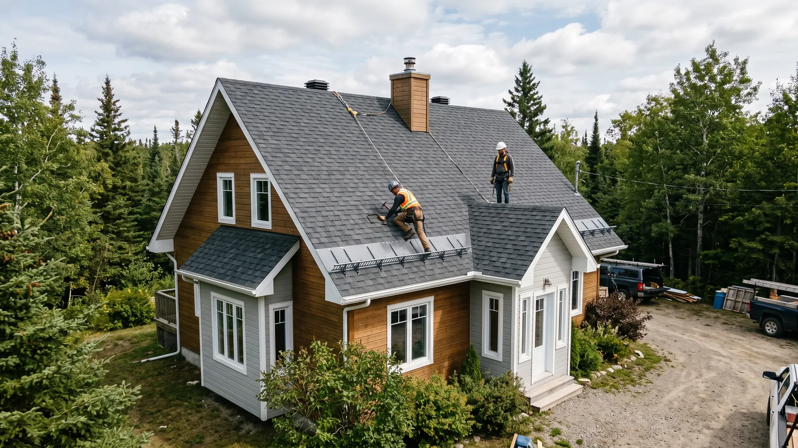
regions · abitibi-temiscamingueMaison détachée en Abitibi-Témiscamingue, toiture adaptée à un contexte nordique réaliste. Photographie documentaire immobilière haut de gamme, réaliste, lumière naturelle, maison québécoise crédible, toiture et détails constructifs cohérents, composition horizontale 16:9, palette ardoise et cuivre discrète, aucun texte lisible, aucun logo, aucune enseigne, aucune adresse, aucun monument reconnaissable. Si un couvreur apparaît, il est de taille réaliste, vu à distance et utilise une protection antichute conforme; aucun outil lumineux en plein jour.
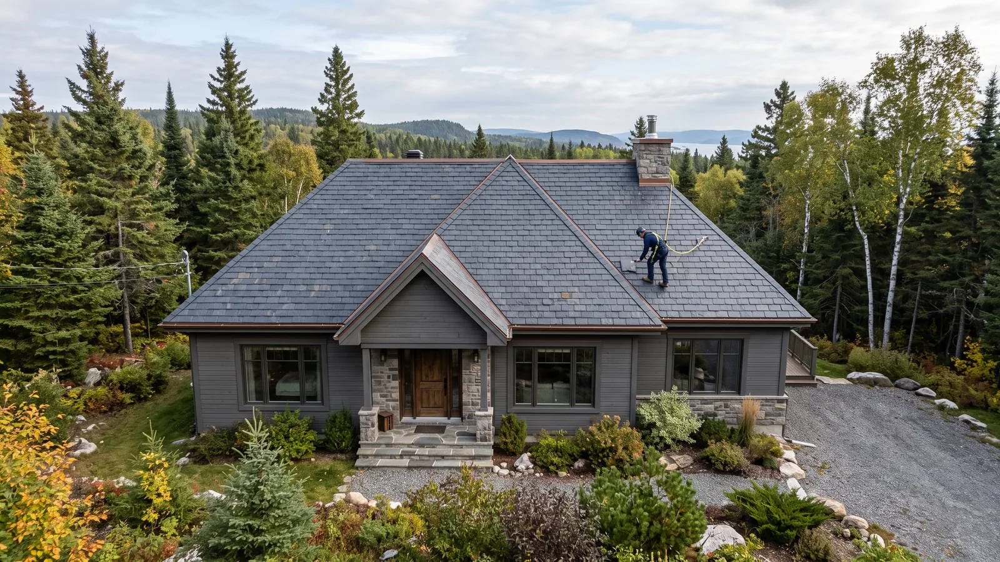
regions · cote-nordMaison de la Côte-Nord avec toiture en pente, contexte résidentiel boréal sobre. Photographie documentaire immobilière haut de gamme, réaliste, lumière naturelle, maison québécoise crédible, toiture et détails constructifs cohérents, composition horizontale 16:9, palette ardoise et cuivre discrète, aucun texte lisible, aucun logo, aucune enseigne, aucune adresse, aucun monument reconnaissable. Si un couvreur apparaît, il est de taille réaliste, vu à distance et utilise une protection antichute conforme; aucun outil lumineux en plein jour.
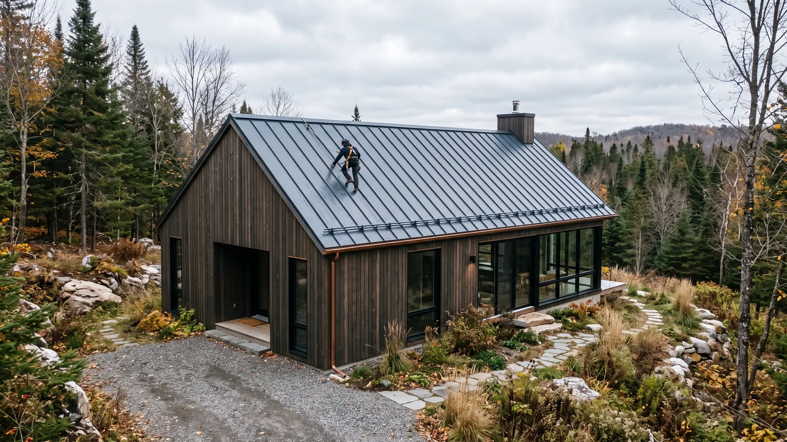
regions · nord-du-quebecMaison nordique réaliste avec toiture simple adaptée au climat, lumière froide naturelle. Photographie documentaire immobilière haut de gamme, réaliste, lumière naturelle, maison québécoise crédible, toiture et détails constructifs cohérents, composition horizontale 16:9, palette ardoise et cuivre discrète, aucun texte lisible, aucun logo, aucune enseigne, aucune adresse, aucun monument reconnaissable. Si un couvreur apparaît, il est de taille réaliste, vu à distance et utilise une protection antichute conforme; aucun outil lumineux en plein jour.
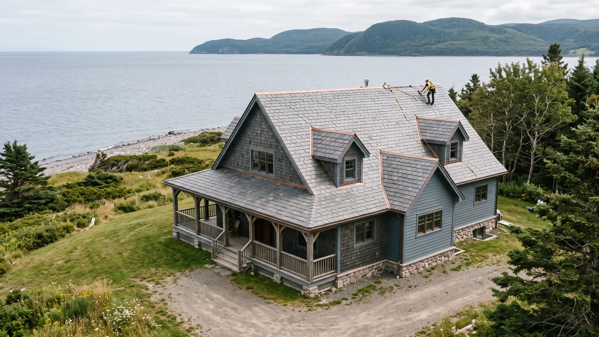
regions · gaspesie-iles-de-la-madeleineMaison résidentielle gaspésienne avec toiture résistante aux vents, contexte côtier discret. Photographie documentaire immobilière haut de gamme, réaliste, lumière naturelle, maison québécoise crédible, toiture et détails constructifs cohérents, composition horizontale 16:9, palette ardoise et cuivre discrète, aucun texte lisible, aucun logo, aucune enseigne, aucune adresse, aucun monument reconnaissable. Si un couvreur apparaît, il est de taille réaliste, vu à distance et utilise une protection antichute conforme; aucun outil lumineux en plein jour.
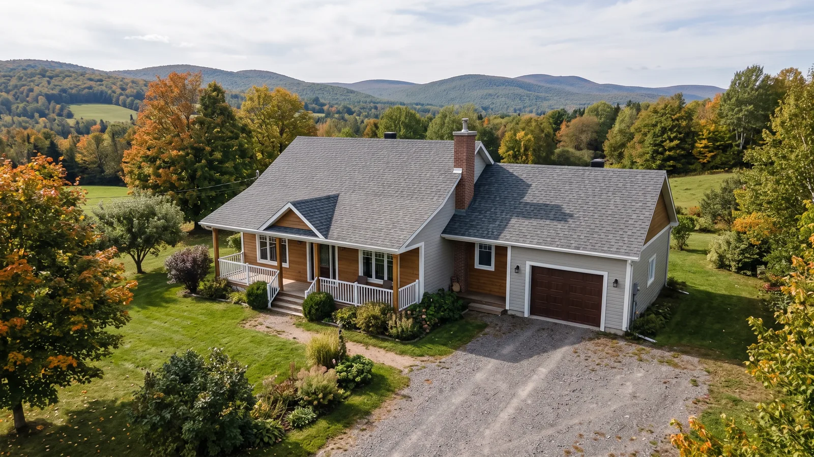
regions · chaudiere-appalachesMaison familiale en Chaudière-Appalaches, toiture en bardeau et relief doux en arrière-plan. Photographie documentaire immobilière haut de gamme, réaliste, lumière naturelle, maison québécoise crédible, toiture et détails constructifs cohérents, composition horizontale 16:9, palette ardoise et cuivre discrète, aucun texte lisible, aucun logo, aucune enseigne, aucune adresse, aucun monument reconnaissable. Si un couvreur apparaît, il est de taille réaliste, vu à distance et utilise une protection antichute conforme; aucun outil lumineux en plein jour.
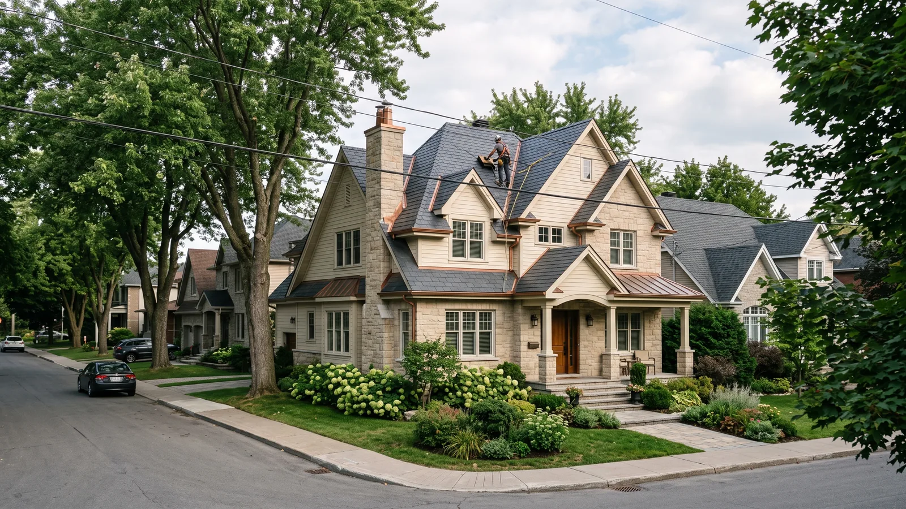
regions · lavalMaison de banlieue à Laval avec toiture à plusieurs versants, rue mature et terrain compact. Photographie documentaire immobilière haut de gamme, réaliste, lumière naturelle, maison québécoise crédible, toiture et détails constructifs cohérents, composition horizontale 16:9, palette ardoise et cuivre discrète, aucun texte lisible, aucun logo, aucune enseigne, aucune adresse, aucun monument reconnaissable. Si un couvreur apparaît, il est de taille réaliste, vu à distance et utilise une protection antichute conforme; aucun outil lumineux en plein jour.
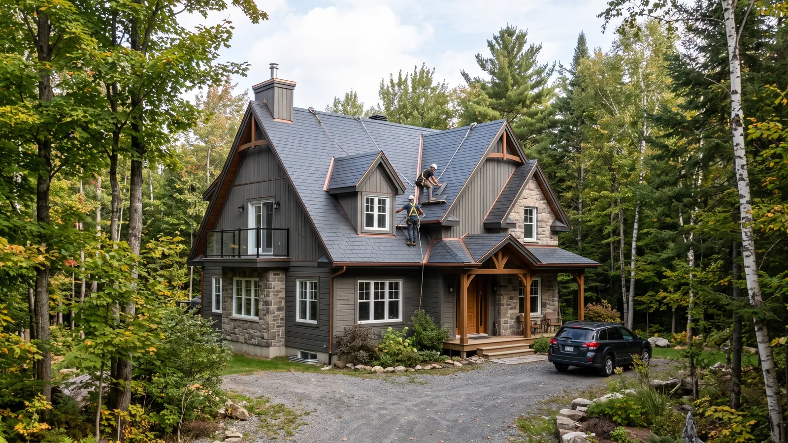
regions · lanaudiereMaison unifamiliale dans Lanaudière, toiture visible dans un environnement résidentiel boisé. Photographie documentaire immobilière haut de gamme, réaliste, lumière naturelle, maison québécoise crédible, toiture et détails constructifs cohérents, composition horizontale 16:9, palette ardoise et cuivre discrète, aucun texte lisible, aucun logo, aucune enseigne, aucune adresse, aucun monument reconnaissable. Si un couvreur apparaît, il est de taille réaliste, vu à distance et utilise une protection antichute conforme; aucun outil lumineux en plein jour.
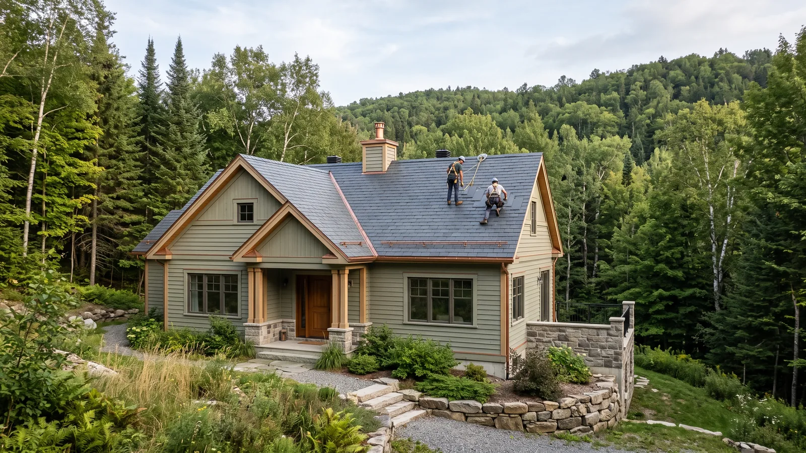
regions · laurentidesMaison des Laurentides avec toiture en pente, relief discret et forêt en arrière-plan, aucune personne démesurée. Photographie documentaire immobilière haut de gamme, réaliste, lumière naturelle, maison québécoise crédible, toiture et détails constructifs cohérents, composition horizontale 16:9, palette ardoise et cuivre discrète, aucun texte lisible, aucun logo, aucune enseigne, aucune adresse, aucun monument reconnaissable. Si un couvreur apparaît, il est de taille réaliste, vu à distance et utilise une protection antichute conforme; aucun outil lumineux en plein jour.
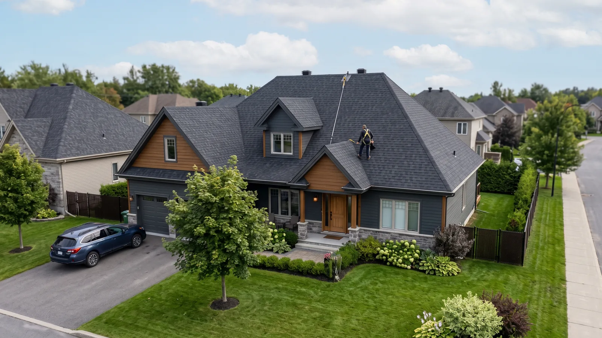
regions · monteregiePropriété résidentielle en Montérégie, toiture en bardeau et terrain plat dans un quartier familial. Photographie documentaire immobilière haut de gamme, réaliste, lumière naturelle, maison québécoise crédible, toiture et détails constructifs cohérents, composition horizontale 16:9, palette ardoise et cuivre discrète, aucun texte lisible, aucun logo, aucune enseigne, aucune adresse, aucun monument reconnaissable. Si un couvreur apparaît, il est de taille réaliste, vu à distance et utilise une protection antichute conforme; aucun outil lumineux en plein jour.
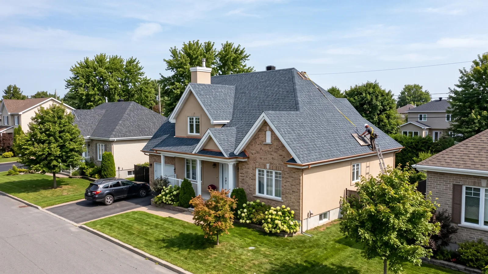
regions · centre-du-quebecMaison au Centre-du-Québec, toiture résidentielle nette dans un contexte de ville moyenne. Photographie documentaire immobilière haut de gamme, réaliste, lumière naturelle, maison québécoise crédible, toiture et détails constructifs cohérents, composition horizontale 16:9, palette ardoise et cuivre discrète, aucun texte lisible, aucun logo, aucune enseigne, aucune adresse, aucun monument reconnaissable. Si un couvreur apparaît, il est de taille réaliste, vu à distance et utilise une protection antichute conforme; aucun outil lumineux en plein jour.
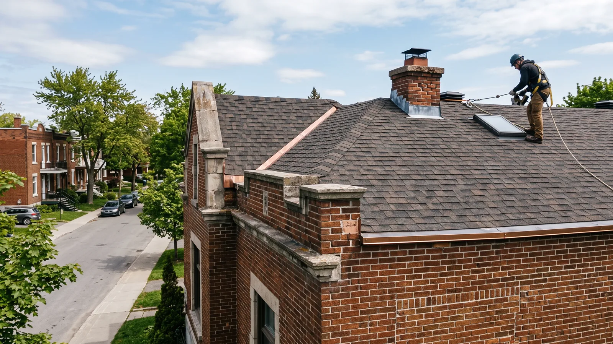
cities · montrealToiture d'un duplex montréalais en brique, parapet et détails urbains crédibles, rue calme. Photographie documentaire immobilière haut de gamme, réaliste, lumière naturelle, maison québécoise crédible, toiture et détails constructifs cohérents, composition horizontale 16:9, palette ardoise et cuivre discrète, aucun texte lisible, aucun logo, aucune enseigne, aucune adresse, aucun monument reconnaissable. Si un couvreur apparaît, il est de taille réaliste, vu à distance et utilise une protection antichute conforme; aucun outil lumineux en plein jour.
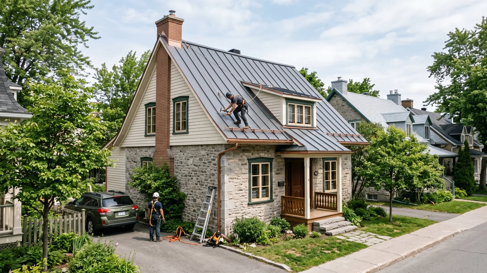
cities · quebecMaison résidentielle de Québec avec toiture en pente, architecture locale sobre sans monument. Photographie documentaire immobilière haut de gamme, réaliste, lumière naturelle, maison québécoise crédible, toiture et détails constructifs cohérents, composition horizontale 16:9, palette ardoise et cuivre discrète, aucun texte lisible, aucun logo, aucune enseigne, aucune adresse, aucun monument reconnaissable. Si un couvreur apparaît, il est de taille réaliste, vu à distance et utilise une protection antichute conforme; aucun outil lumineux en plein jour.
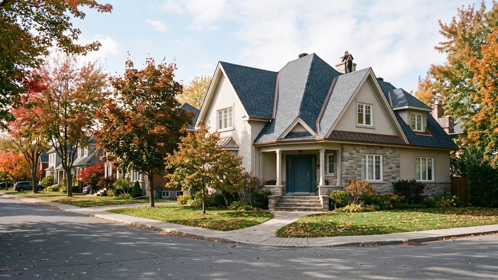
cities · lavalMaison unifamiliale à Laval avec toiture à versants multiples dans une rue mature. Photographie documentaire immobilière haut de gamme, réaliste, lumière naturelle, maison québécoise crédible, toiture et détails constructifs cohérents, composition horizontale 16:9, palette ardoise et cuivre discrète, aucun texte lisible, aucun logo, aucune enseigne, aucune adresse, aucun monument reconnaissable. Si un couvreur apparaît, il est de taille réaliste, vu à distance et utilise une protection antichute conforme; aucun outil lumineux en plein jour.
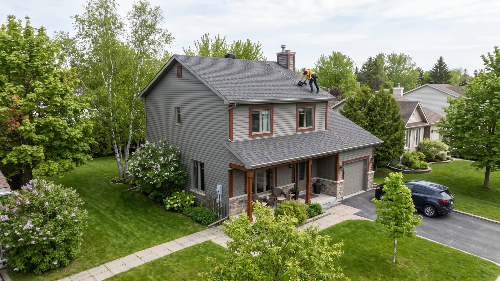
cities · gatineauMaison familiale à Gatineau, toiture en bardeau bien visible et quartier verdoyant. Photographie documentaire immobilière haut de gamme, réaliste, lumière naturelle, maison québécoise crédible, toiture et détails constructifs cohérents, composition horizontale 16:9, palette ardoise et cuivre discrète, aucun texte lisible, aucun logo, aucune enseigne, aucune adresse, aucun monument reconnaissable. Si un couvreur apparaît, il est de taille réaliste, vu à distance et utilise une protection antichute conforme; aucun outil lumineux en plein jour.
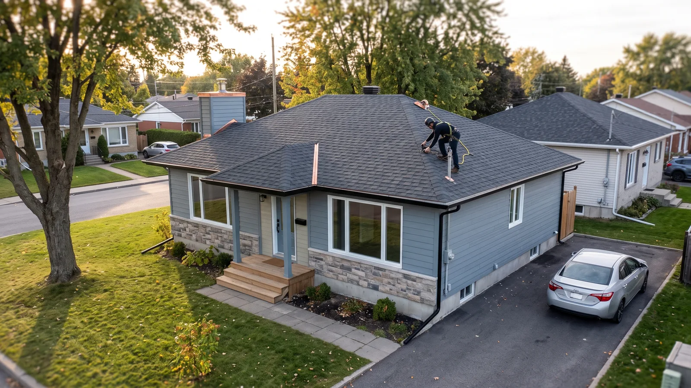
cities · longueuilBungalow ou duplex à Longueuil avec toiture résidentielle typique de la Rive-Sud. Photographie documentaire immobilière haut de gamme, réaliste, lumière naturelle, maison québécoise crédible, toiture et détails constructifs cohérents, composition horizontale 16:9, palette ardoise et cuivre discrète, aucun texte lisible, aucun logo, aucune enseigne, aucune adresse, aucun monument reconnaissable. Si un couvreur apparaît, il est de taille réaliste, vu à distance et utilise une protection antichute conforme; aucun outil lumineux en plein jour.
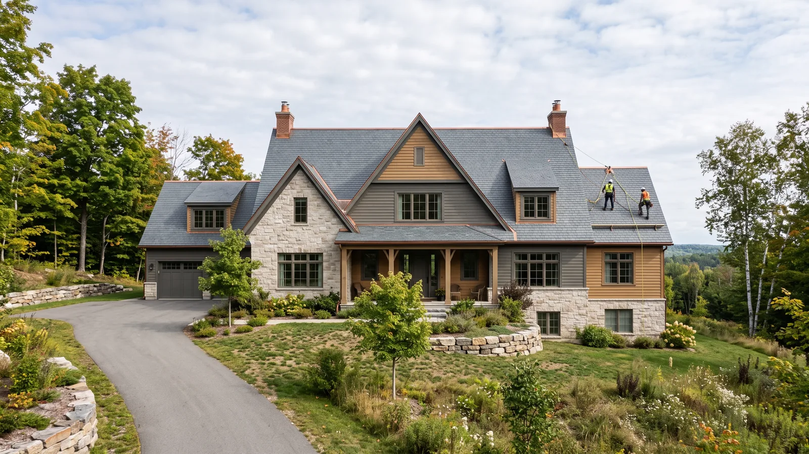
cities · sherbrookeMaison à Sherbrooke sur terrain légèrement vallonné, toiture en pente au centre de la composition. Photographie documentaire immobilière haut de gamme, réaliste, lumière naturelle, maison québécoise crédible, toiture et détails constructifs cohérents, composition horizontale 16:9, palette ardoise et cuivre discrète, aucun texte lisible, aucun logo, aucune enseigne, aucune adresse, aucun monument reconnaissable. Si un couvreur apparaît, il est de taille réaliste, vu à distance et utilise une protection antichute conforme; aucun outil lumineux en plein jour.
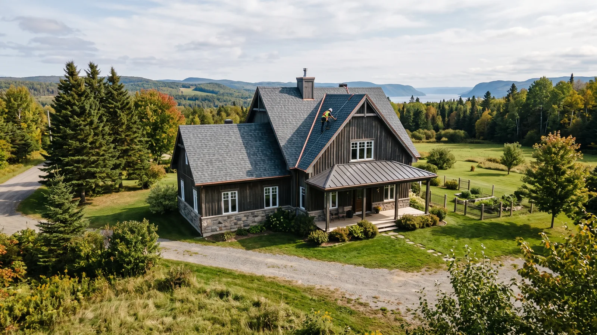
cities · saguenayMaison détachée à Saguenay avec toiture robuste et terrain spacieux. Photographie documentaire immobilière haut de gamme, réaliste, lumière naturelle, maison québécoise crédible, toiture et détails constructifs cohérents, composition horizontale 16:9, palette ardoise et cuivre discrète, aucun texte lisible, aucun logo, aucune enseigne, aucune adresse, aucun monument reconnaissable. Si un couvreur apparaît, il est de taille réaliste, vu à distance et utilise une protection antichute conforme; aucun outil lumineux en plein jour.
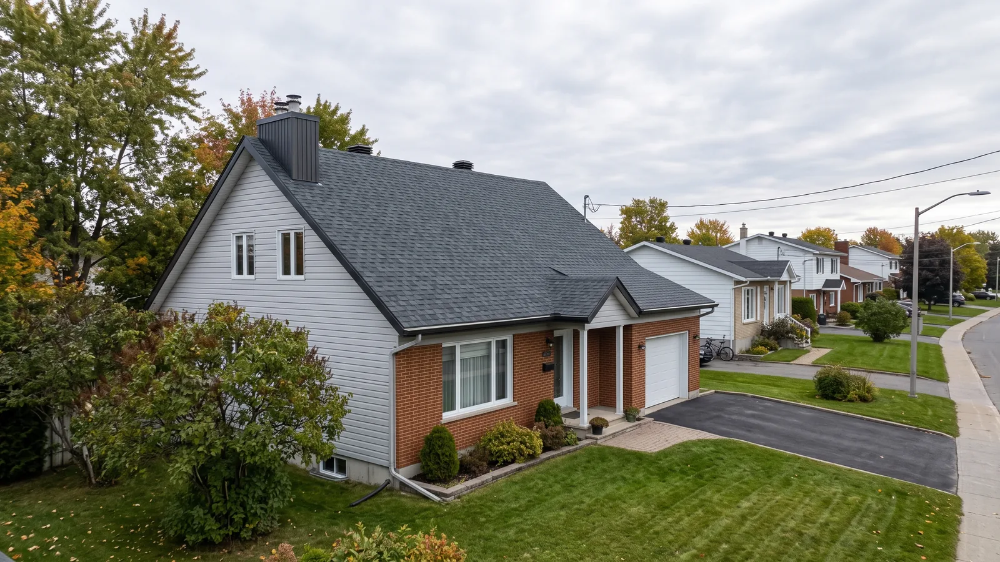
cities · levisMaison familiale à Lévis, toiture récente dans un développement résidentiel sobre. Photographie documentaire immobilière haut de gamme, réaliste, lumière naturelle, maison québécoise crédible, toiture et détails constructifs cohérents, composition horizontale 16:9, palette ardoise et cuivre discrète, aucun texte lisible, aucun logo, aucune enseigne, aucune adresse, aucun monument reconnaissable. Si un couvreur apparaît, il est de taille réaliste, vu à distance et utilise une protection antichute conforme; aucun outil lumineux en plein jour.
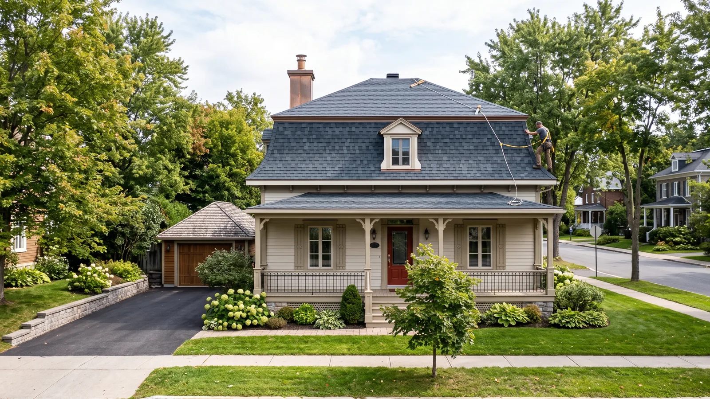
cities · trois-rivieresMaison québécoise à Trois-Rivières, toiture en bardeau et quartier mature. Photographie documentaire immobilière haut de gamme, réaliste, lumière naturelle, maison québécoise crédible, toiture et détails constructifs cohérents, composition horizontale 16:9, palette ardoise et cuivre discrète, aucun texte lisible, aucun logo, aucune enseigne, aucune adresse, aucun monument reconnaissable. Si un couvreur apparaît, il est de taille réaliste, vu à distance et utilise une protection antichute conforme; aucun outil lumineux en plein jour.
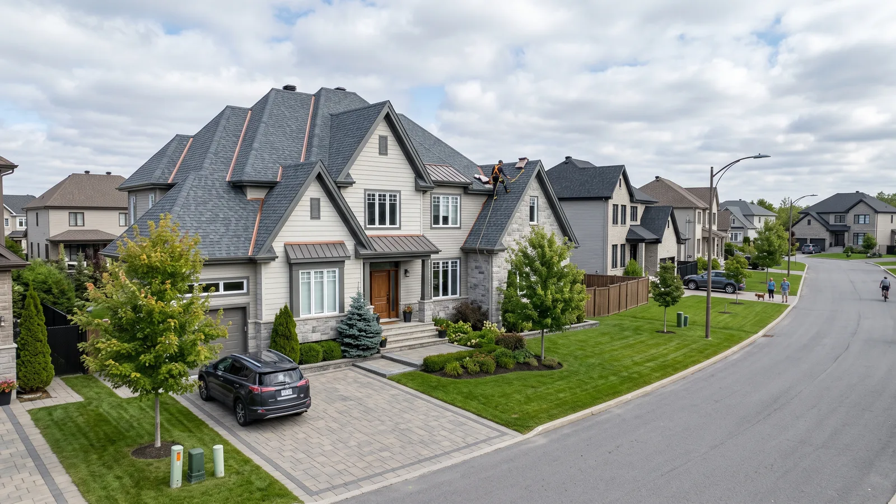
cities · terrebonneMaison récente à Terrebonne, toiture à plusieurs versants et aménagement de banlieue. Photographie documentaire immobilière haut de gamme, réaliste, lumière naturelle, maison québécoise crédible, toiture et détails constructifs cohérents, composition horizontale 16:9, palette ardoise et cuivre discrète, aucun texte lisible, aucun logo, aucune enseigne, aucune adresse, aucun monument reconnaissable. Si un couvreur apparaît, il est de taille réaliste, vu à distance et utilise une protection antichute conforme; aucun outil lumineux en plein jour.
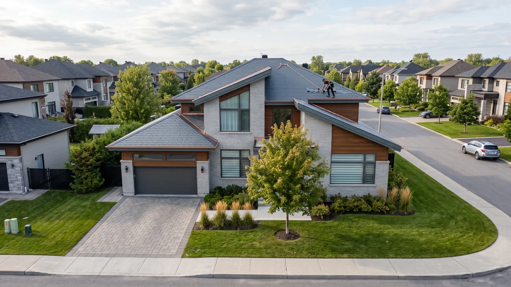
cities · brossardMaison contemporaine à Brossard avec lignes de toiture nettes, banlieue dense et soignée. Photographie documentaire immobilière haut de gamme, réaliste, lumière naturelle, maison québécoise crédible, toiture et détails constructifs cohérents, composition horizontale 16:9, palette ardoise et cuivre discrète, aucun texte lisible, aucun logo, aucune enseigne, aucune adresse, aucun monument reconnaissable. Si un couvreur apparaît, il est de taille réaliste, vu à distance et utilise une protection antichute conforme; aucun outil lumineux en plein jour.
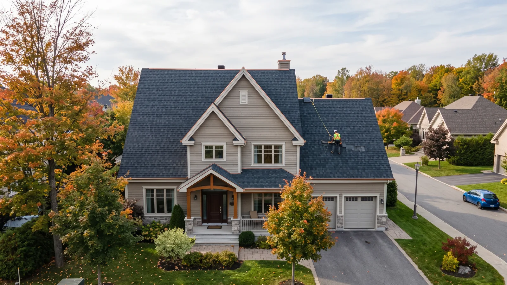
cities · saint-jeromeMaison familiale à Saint-Jérôme, toiture en pente et contexte résidentiel des Laurentides. Photographie documentaire immobilière haut de gamme, réaliste, lumière naturelle, maison québécoise crédible, toiture et détails constructifs cohérents, composition horizontale 16:9, palette ardoise et cuivre discrète, aucun texte lisible, aucun logo, aucune enseigne, aucune adresse, aucun monument reconnaissable. Si un couvreur apparaît, il est de taille réaliste, vu à distance et utilise une protection antichute conforme; aucun outil lumineux en plein jour.
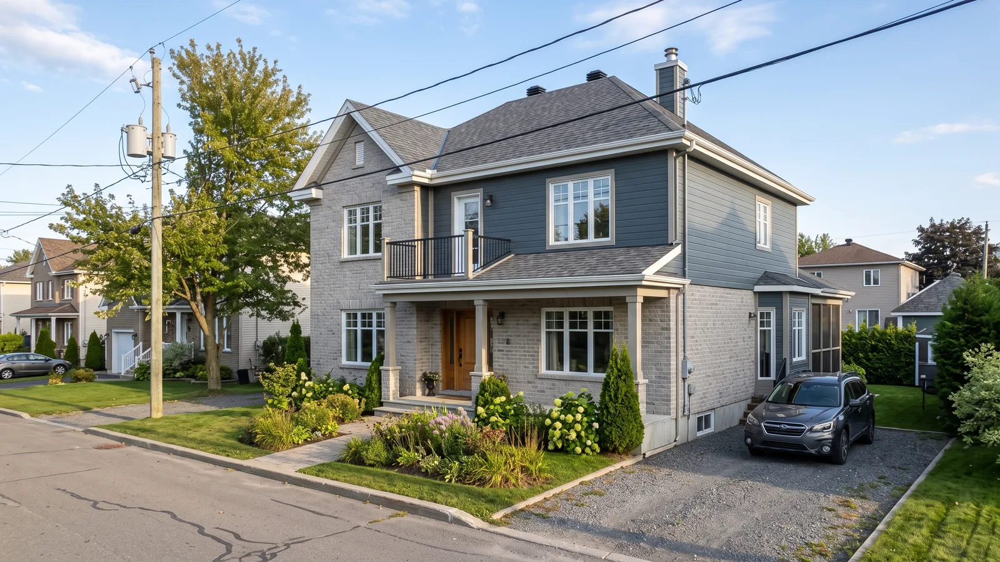
cities · drummondvilleMaison familiale à Drummondville avec toiture en bardeau, contexte de ville moyenne. Photographie documentaire immobilière haut de gamme, réaliste, lumière naturelle, maison québécoise crédible, toiture et détails constructifs cohérents, composition horizontale 16:9, palette ardoise et cuivre discrète, aucun texte lisible, aucun logo, aucune enseigne, aucune adresse, aucun monument reconnaissable. Si un couvreur apparaît, il est de taille réaliste, vu à distance et utilise une protection antichute conforme; aucun outil lumineux en plein jour.
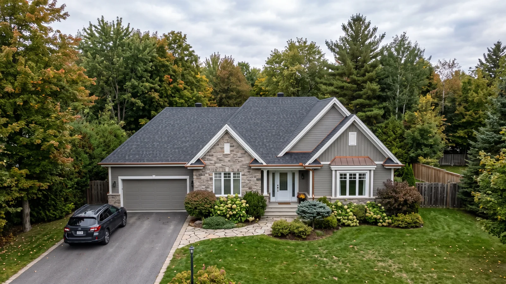
cities · granbyMaison résidentielle à Granby, toiture simple bien cadrée et terrain arboré. Photographie documentaire immobilière haut de gamme, réaliste, lumière naturelle, maison québécoise crédible, toiture et détails constructifs cohérents, composition horizontale 16:9, palette ardoise et cuivre discrète, aucun texte lisible, aucun logo, aucune enseigne, aucune adresse, aucun monument reconnaissable. Si un couvreur apparaît, il est de taille réaliste, vu à distance et utilise une protection antichute conforme; aucun outil lumineux en plein jour.
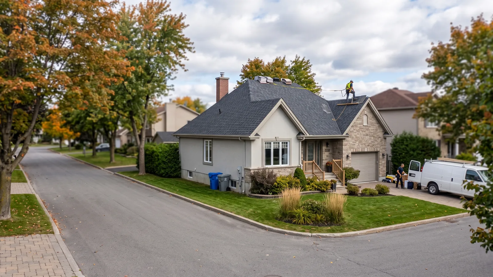
cities · blainvilleMaison de banlieue à Blainville avec toiture récente et rue résidentielle calme. Photographie documentaire immobilière haut de gamme, réaliste, lumière naturelle, maison québécoise crédible, toiture et détails constructifs cohérents, composition horizontale 16:9, palette ardoise et cuivre discrète, aucun texte lisible, aucun logo, aucune enseigne, aucune adresse, aucun monument reconnaissable. Si un couvreur apparaît, il est de taille réaliste, vu à distance et utilise une protection antichute conforme; aucun outil lumineux en plein jour.
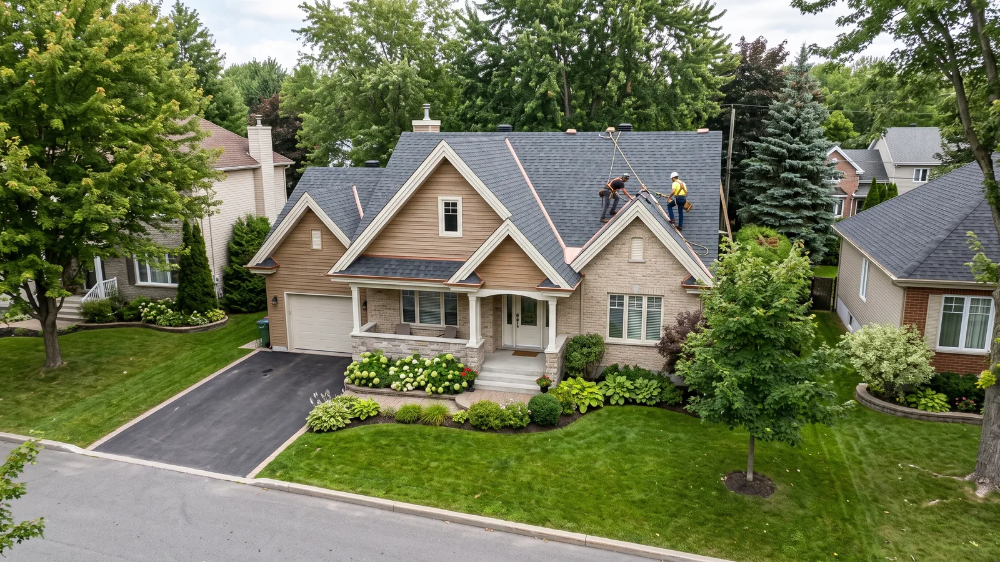
cities · repentignyMaison unifamiliale à Repentigny, toiture à pignons dans un quartier mature. Photographie documentaire immobilière haut de gamme, réaliste, lumière naturelle, maison québécoise crédible, toiture et détails constructifs cohérents, composition horizontale 16:9, palette ardoise et cuivre discrète, aucun texte lisible, aucun logo, aucune enseigne, aucune adresse, aucun monument reconnaissable. Si un couvreur apparaît, il est de taille réaliste, vu à distance et utilise une protection antichute conforme; aucun outil lumineux en plein jour.
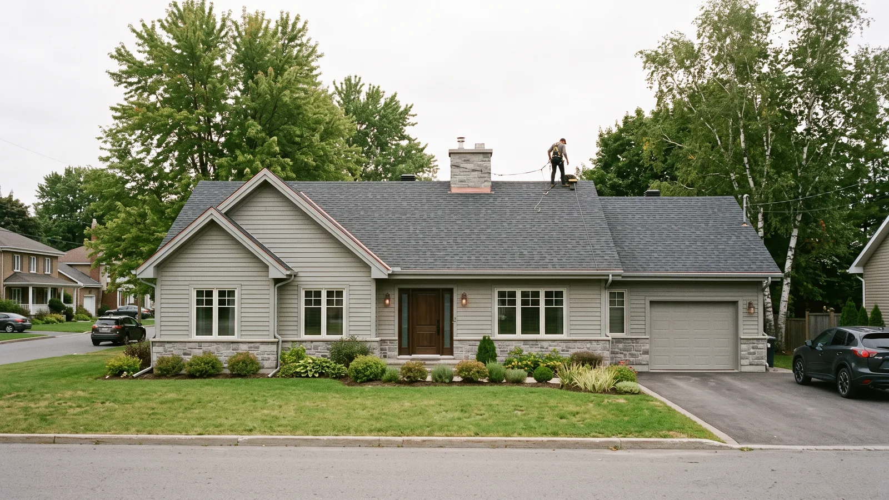
cities · saint-hyacintheMaison familiale à Saint-Hyacinthe, toiture en bardeau et terrain plat. Photographie documentaire immobilière haut de gamme, réaliste, lumière naturelle, maison québécoise crédible, toiture et détails constructifs cohérents, composition horizontale 16:9, palette ardoise et cuivre discrète, aucun texte lisible, aucun logo, aucune enseigne, aucune adresse, aucun monument reconnaissable. Si un couvreur apparaît, il est de taille réaliste, vu à distance et utilise une protection antichute conforme; aucun outil lumineux en plein jour.
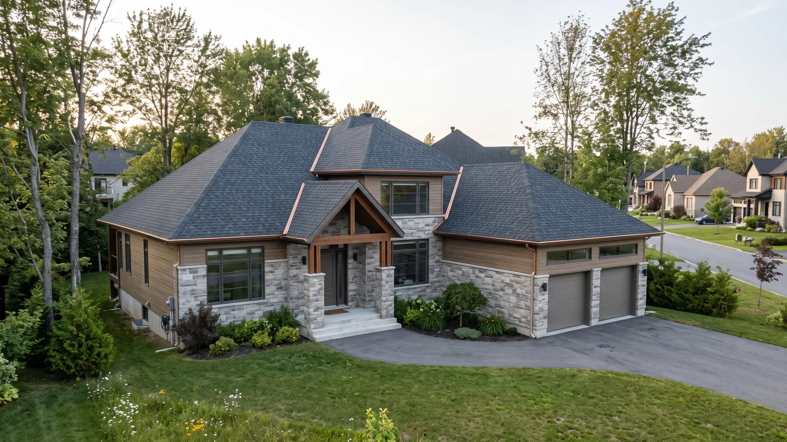
cities · mirabelMaison récente à Mirabel avec grande toiture à versants et environnement semi-urbain. Photographie documentaire immobilière haut de gamme, réaliste, lumière naturelle, maison québécoise crédible, toiture et détails constructifs cohérents, composition horizontale 16:9, palette ardoise et cuivre discrète, aucun texte lisible, aucun logo, aucune enseigne, aucune adresse, aucun monument reconnaissable. Si un couvreur apparaît, il est de taille réaliste, vu à distance et utilise une protection antichute conforme; aucun outil lumineux en plein jour.
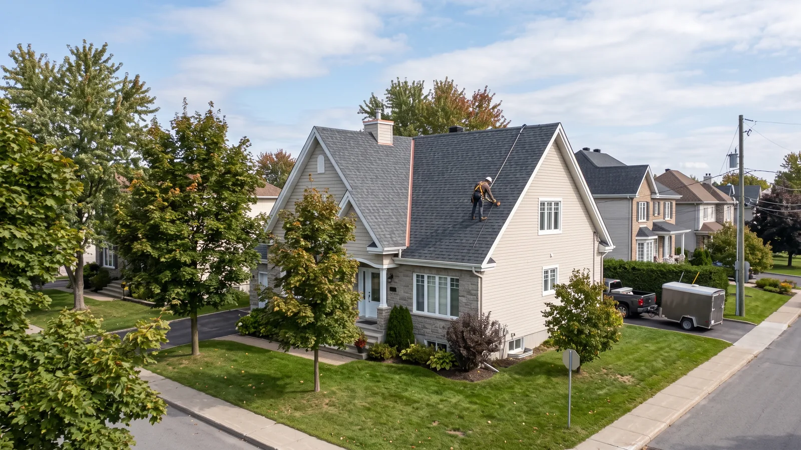
cities · chateauguayMaison résidentielle à Châteauguay, toiture bien visible dans une rue de banlieue. Photographie documentaire immobilière haut de gamme, réaliste, lumière naturelle, maison québécoise crédible, toiture et détails constructifs cohérents, composition horizontale 16:9, palette ardoise et cuivre discrète, aucun texte lisible, aucun logo, aucune enseigne, aucune adresse, aucun monument reconnaissable. Si un couvreur apparaît, il est de taille réaliste, vu à distance et utilise une protection antichute conforme; aucun outil lumineux en plein jour.
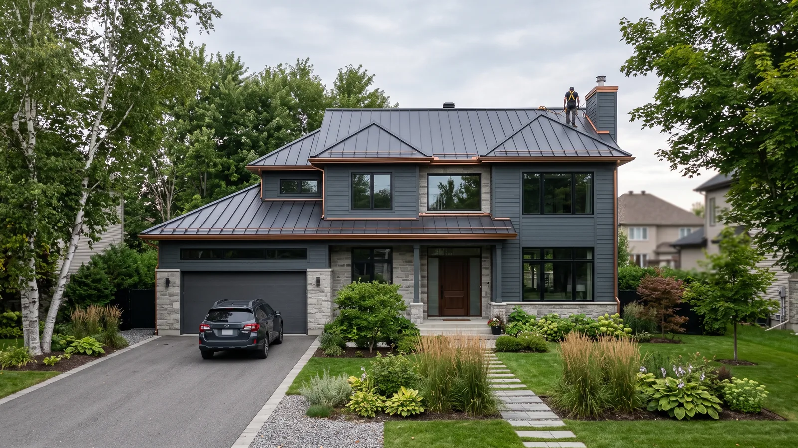
cities · mascoucheMaison familiale à Mascouche avec toiture moderne et terrain paysagé sobre. Photographie documentaire immobilière haut de gamme, réaliste, lumière naturelle, maison québécoise crédible, toiture et détails constructifs cohérents, composition horizontale 16:9, palette ardoise et cuivre discrète, aucun texte lisible, aucun logo, aucune enseigne, aucune adresse, aucun monument reconnaissable. Si un couvreur apparaît, il est de taille réaliste, vu à distance et utilise une protection antichute conforme; aucun outil lumineux en plein jour.
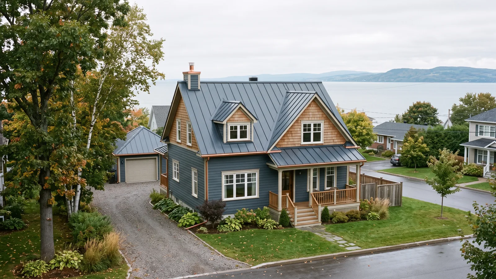
cities · rimouskiMaison à Rimouski avec toiture en pente, lumière maritime et quartier résidentiel discret. Photographie documentaire immobilière haut de gamme, réaliste, lumière naturelle, maison québécoise crédible, toiture et détails constructifs cohérents, composition horizontale 16:9, palette ardoise et cuivre discrète, aucun texte lisible, aucun logo, aucune enseigne, aucune adresse, aucun monument reconnaissable. Si un couvreur apparaît, il est de taille réaliste, vu à distance et utilise une protection antichute conforme; aucun outil lumineux en plein jour.
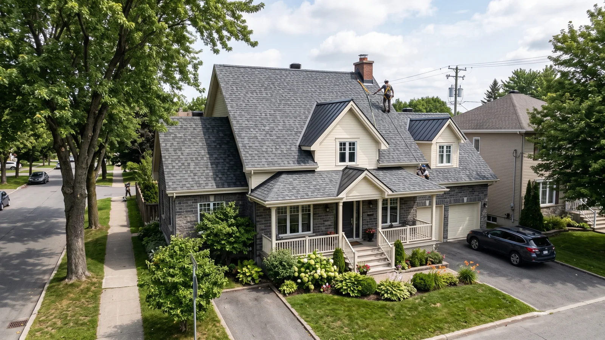
cities · saint-eustacheMaison mature à Saint-Eustache, toiture en bardeau et arbres de rue. Photographie documentaire immobilière haut de gamme, réaliste, lumière naturelle, maison québécoise crédible, toiture et détails constructifs cohérents, composition horizontale 16:9, palette ardoise et cuivre discrète, aucun texte lisible, aucun logo, aucune enseigne, aucune adresse, aucun monument reconnaissable. Si un couvreur apparaît, il est de taille réaliste, vu à distance et utilise une protection antichute conforme; aucun outil lumineux en plein jour.
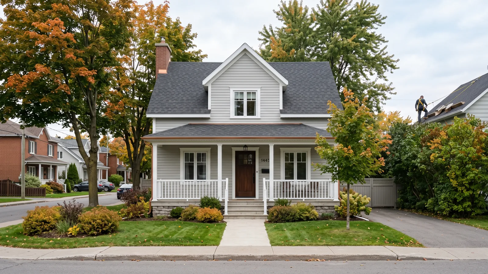
cities · sorel-tracyMaison résidentielle à Sorel-Tracy, toiture simple et contexte urbain calme. Photographie documentaire immobilière haut de gamme, réaliste, lumière naturelle, maison québécoise crédible, toiture et détails constructifs cohérents, composition horizontale 16:9, palette ardoise et cuivre discrète, aucun texte lisible, aucun logo, aucune enseigne, aucune adresse, aucun monument reconnaissable. Si un couvreur apparaît, il est de taille réaliste, vu à distance et utilise une protection antichute conforme; aucun outil lumineux en plein jour.
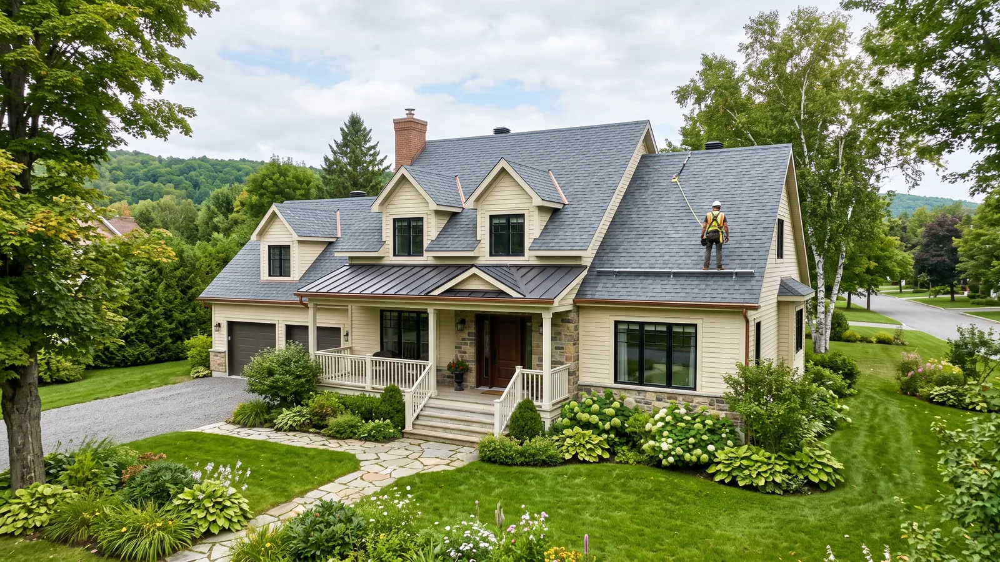
cities · victoriavilleMaison familiale à Victoriaville avec toiture en pente et terrain verdoyant. Photographie documentaire immobilière haut de gamme, réaliste, lumière naturelle, maison québécoise crédible, toiture et détails constructifs cohérents, composition horizontale 16:9, palette ardoise et cuivre discrète, aucun texte lisible, aucun logo, aucune enseigne, aucune adresse, aucun monument reconnaissable. Si un couvreur apparaît, il est de taille réaliste, vu à distance et utilise une protection antichute conforme; aucun outil lumineux en plein jour.
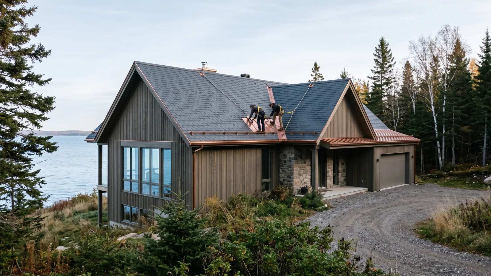
cities · sept-ilesMaison à Sept-Îles avec toiture adaptée au climat, lumière nordique naturelle. Photographie documentaire immobilière haut de gamme, réaliste, lumière naturelle, maison québécoise crédible, toiture et détails constructifs cohérents, composition horizontale 16:9, palette ardoise et cuivre discrète, aucun texte lisible, aucun logo, aucune enseigne, aucune adresse, aucun monument reconnaissable. Si un couvreur apparaît, il est de taille réaliste, vu à distance et utilise une protection antichute conforme; aucun outil lumineux en plein jour.
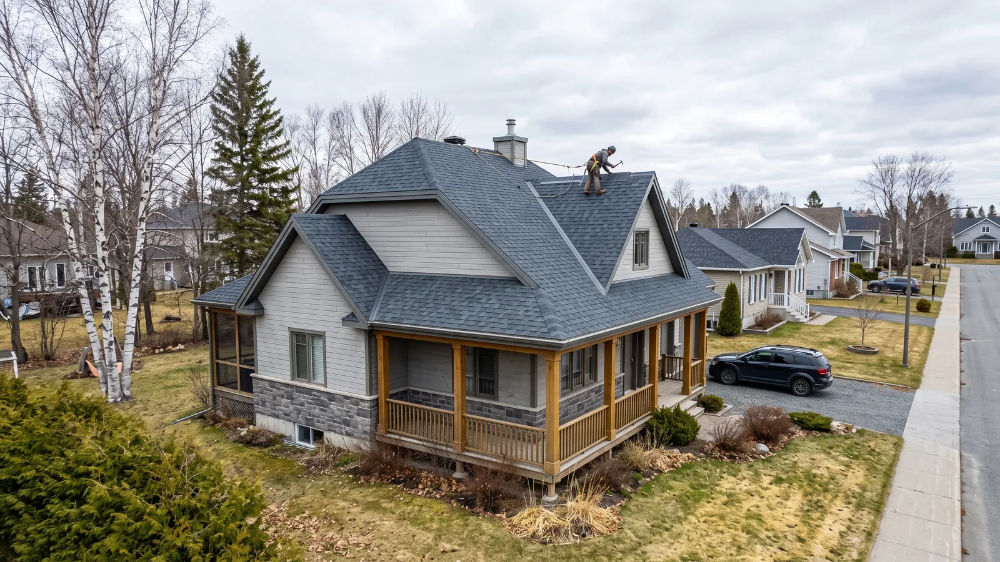
cities · rouyn-norandaMaison détachée à Rouyn-Noranda avec toiture robuste dans un quartier nordique crédible. Photographie documentaire immobilière haut de gamme, réaliste, lumière naturelle, maison québécoise crédible, toiture et détails constructifs cohérents, composition horizontale 16:9, palette ardoise et cuivre discrète, aucun texte lisible, aucun logo, aucune enseigne, aucune adresse, aucun monument reconnaissable. Si un couvreur apparaît, il est de taille réaliste, vu à distance et utilise une protection antichute conforme; aucun outil lumineux en plein jour.
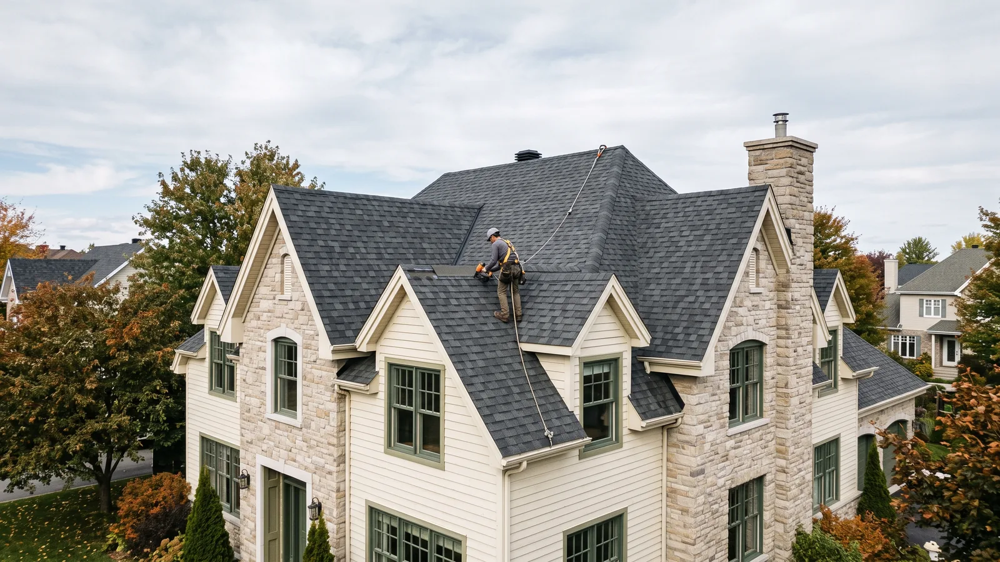
pool · toiture-01Couvreur vu à distance posant du bardeau d'asphalte avec protection antichute sur une maison québécoise. Photographie documentaire immobilière haut de gamme, réaliste, lumière naturelle, maison québécoise crédible, toiture et détails constructifs cohérents, composition horizontale 16:9, palette ardoise et cuivre discrète, aucun texte lisible, aucun logo, aucune enseigne, aucune adresse, aucun monument reconnaissable. Si un couvreur apparaît, il est de taille réaliste, vu à distance et utilise une protection antichute conforme; aucun outil lumineux en plein jour.
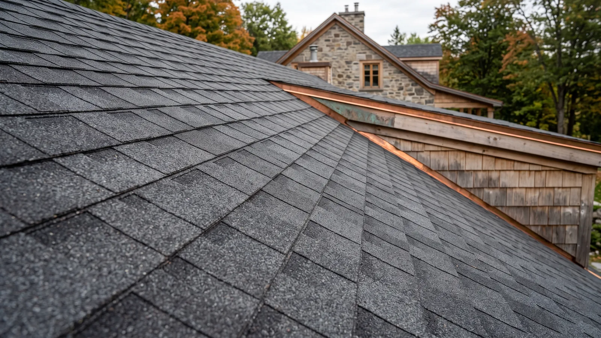
pool · toiture-02Vue rapprochée réaliste de rangées de bardeaux d'asphalte bien alignées, aucun outil ni texte. Photographie documentaire immobilière haut de gamme, réaliste, lumière naturelle, maison québécoise crédible, toiture et détails constructifs cohérents, composition horizontale 16:9, palette ardoise et cuivre discrète, aucun texte lisible, aucun logo, aucune enseigne, aucune adresse, aucun monument reconnaissable. Si un couvreur apparaît, il est de taille réaliste, vu à distance et utilise une protection antichute conforme; aucun outil lumineux en plein jour.
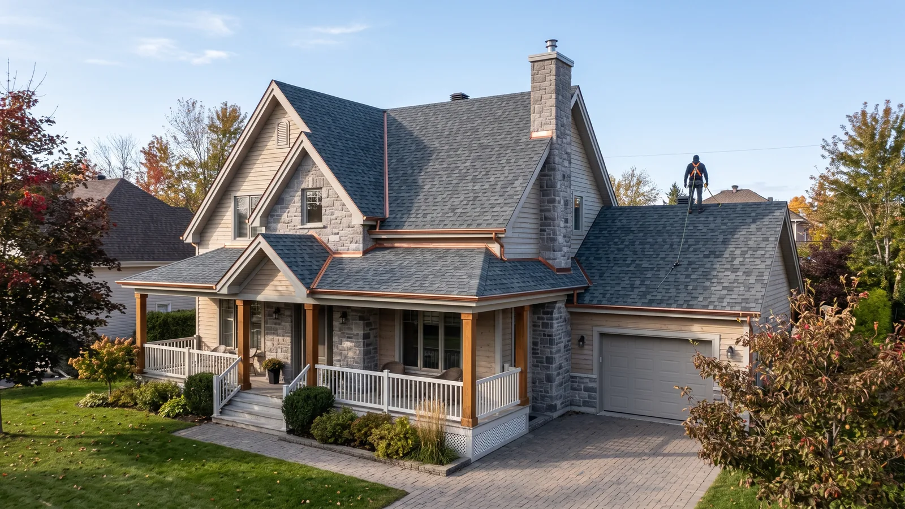
pool · toiture-03Maison unifamiliale québécoise avec toiture en bardeau récemment refaite, lumière de matin. Photographie documentaire immobilière haut de gamme, réaliste, lumière naturelle, maison québécoise crédible, toiture et détails constructifs cohérents, composition horizontale 16:9, palette ardoise et cuivre discrète, aucun texte lisible, aucun logo, aucune enseigne, aucune adresse, aucun monument reconnaissable. Si un couvreur apparaît, il est de taille réaliste, vu à distance et utilise une protection antichute conforme; aucun outil lumineux en plein jour.
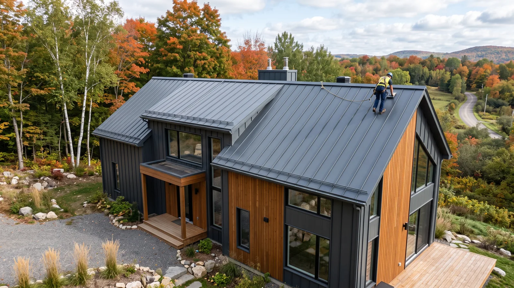
pool · toiture-04Toiture métallique résidentielle à joints debout sur une maison contemporaine québécoise. Photographie documentaire immobilière haut de gamme, réaliste, lumière naturelle, maison québécoise crédible, toiture et détails constructifs cohérents, composition horizontale 16:9, palette ardoise et cuivre discrète, aucun texte lisible, aucun logo, aucune enseigne, aucune adresse, aucun monument reconnaissable. Si un couvreur apparaît, il est de taille réaliste, vu à distance et utilise une protection antichute conforme; aucun outil lumineux en plein jour.
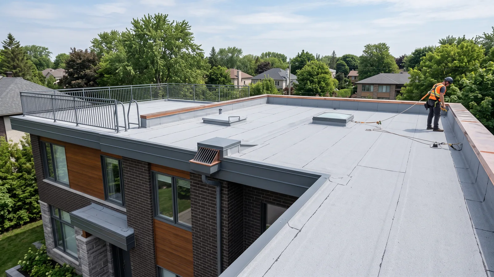
pool · toiture-05Toit plat résidentiel avec membrane propre et détails de drainage crédibles, vue large sécuritaire. Photographie documentaire immobilière haut de gamme, réaliste, lumière naturelle, maison québécoise crédible, toiture et détails constructifs cohérents, composition horizontale 16:9, palette ardoise et cuivre discrète, aucun texte lisible, aucun logo, aucune enseigne, aucune adresse, aucun monument reconnaissable. Si un couvreur apparaît, il est de taille réaliste, vu à distance et utilise une protection antichute conforme; aucun outil lumineux en plein jour.
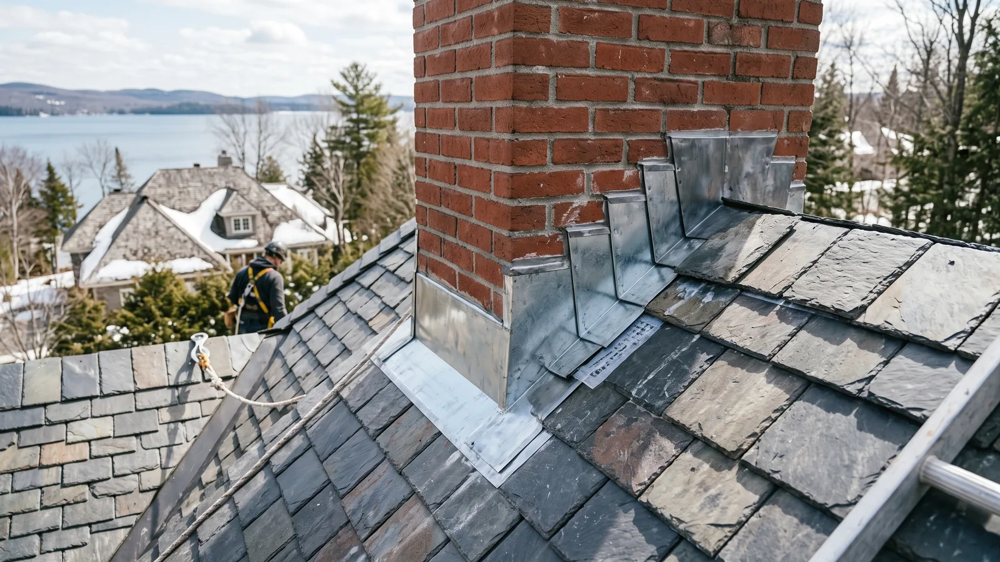
pool · toiture-06Solin métallique autour d'une cheminée de maçonnerie, détail constructif réaliste sans défaut exagéré. Photographie documentaire immobilière haut de gamme, réaliste, lumière naturelle, maison québécoise crédible, toiture et détails constructifs cohérents, composition horizontale 16:9, palette ardoise et cuivre discrète, aucun texte lisible, aucun logo, aucune enseigne, aucune adresse, aucun monument reconnaissable. Si un couvreur apparaît, il est de taille réaliste, vu à distance et utilise une protection antichute conforme; aucun outil lumineux en plein jour.
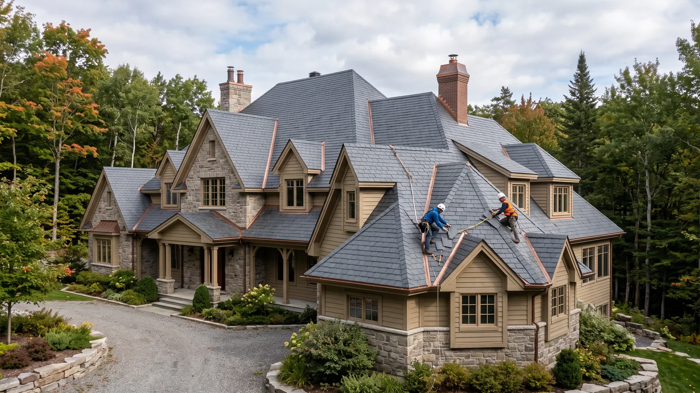
pool · toiture-07Noues et versants d'une toiture complexe photographiés depuis le sol, maison complète visible. Photographie documentaire immobilière haut de gamme, réaliste, lumière naturelle, maison québécoise crédible, toiture et détails constructifs cohérents, composition horizontale 16:9, palette ardoise et cuivre discrète, aucun texte lisible, aucun logo, aucune enseigne, aucune adresse, aucun monument reconnaissable. Si un couvreur apparaît, il est de taille réaliste, vu à distance et utilise une protection antichute conforme; aucun outil lumineux en plein jour.
pool · toiture-08Gouttières et bordure de toit d'une maison québécoise après une pluie légère. Photographie documentaire immobilière haut de gamme, réaliste, lumière naturelle, maison québécoise crédible, toiture et détails constructifs cohérents, composition horizontale 16:9, palette ardoise et cuivre discrète, aucun texte lisible, aucun logo, aucune enseigne, aucune adresse, aucun monument reconnaissable. Si un couvreur apparaît, il est de taille réaliste, vu à distance et utilise une protection antichute conforme; aucun outil lumineux en plein jour.
pool · toiture-09Couvreur de dos inspectant visuellement une toiture depuis une échelle sécurisée, plan très large. Photographie documentaire immobilière haut de gamme, réaliste, lumière naturelle, maison québécoise crédible, toiture et détails constructifs cohérents, composition horizontale 16:9, palette ardoise et cuivre discrète, aucun texte lisible, aucun logo, aucune enseigne, aucune adresse, aucun monument reconnaissable. Si un couvreur apparaît, il est de taille réaliste, vu à distance et utilise une protection antichute conforme; aucun outil lumineux en plein jour.
pool · toiture-10Paquets de bardeaux préparés sur une toiture, chantier résidentiel propre et organisé. Photographie documentaire immobilière haut de gamme, réaliste, lumière naturelle, maison québécoise crédible, toiture et détails constructifs cohérents, composition horizontale 16:9, palette ardoise et cuivre discrète, aucun texte lisible, aucun logo, aucune enseigne, aucune adresse, aucun monument reconnaissable. Si un couvreur apparaît, il est de taille réaliste, vu à distance et utilise une protection antichute conforme; aucun outil lumineux en plein jour.
pool · toiture-11Réparation ciblée de quelques bardeaux sur un versant, couvreur à distance avec harnais. Photographie documentaire immobilière haut de gamme, réaliste, lumière naturelle, maison québécoise crédible, toiture et détails constructifs cohérents, composition horizontale 16:9, palette ardoise et cuivre discrète, aucun texte lisible, aucun logo, aucune enseigne, aucune adresse, aucun monument reconnaissable. Si un couvreur apparaît, il est de taille réaliste, vu à distance et utilise une protection antichute conforme; aucun outil lumineux en plein jour.
pool · toiture-12Avant-toit et ventilation de soffite d'une maison, photographie immobilière claire. Photographie documentaire immobilière haut de gamme, réaliste, lumière naturelle, maison québécoise crédible, toiture et détails constructifs cohérents, composition horizontale 16:9, palette ardoise et cuivre discrète, aucun texte lisible, aucun logo, aucune enseigne, aucune adresse, aucun monument reconnaissable. Si un couvreur apparaît, il est de taille réaliste, vu à distance et utilise une protection antichute conforme; aucun outil lumineux en plein jour.
pool · toiture-13Évent de plomberie et solin sur une toiture en bardeau, détail réaliste et propre. Photographie documentaire immobilière haut de gamme, réaliste, lumière naturelle, maison québécoise crédible, toiture et détails constructifs cohérents, composition horizontale 16:9, palette ardoise et cuivre discrète, aucun texte lisible, aucun logo, aucune enseigne, aucune adresse, aucun monument reconnaissable. Si un couvreur apparaît, il est de taille réaliste, vu à distance et utilise une protection antichute conforme; aucun outil lumineux en plein jour.
pool · toiture-14Toiture de plex urbain en brique, vue en hauteur sans adresse ni monument. Photographie documentaire immobilière haut de gamme, réaliste, lumière naturelle, maison québécoise crédible, toiture et détails constructifs cohérents, composition horizontale 16:9, palette ardoise et cuivre discrète, aucun texte lisible, aucun logo, aucune enseigne, aucune adresse, aucun monument reconnaissable. Si un couvreur apparaît, il est de taille réaliste, vu à distance et utilise une protection antichute conforme; aucun outil lumineux en plein jour.
pool · toiture-15Toiture d'un bungalow mature entouré d'arbres, composition québécoise réaliste. Photographie documentaire immobilière haut de gamme, réaliste, lumière naturelle, maison québécoise crédible, toiture et détails constructifs cohérents, composition horizontale 16:9, palette ardoise et cuivre discrète, aucun texte lisible, aucun logo, aucune enseigne, aucune adresse, aucun monument reconnaissable. Si un couvreur apparaît, il est de taille réaliste, vu à distance et utilise une protection antichute conforme; aucun outil lumineux en plein jour.
pool · toiture-16Maison en hiver léger avec neige répartie naturellement sur une toiture en pente. Photographie documentaire immobilière haut de gamme, réaliste, lumière naturelle, maison québécoise crédible, toiture et détails constructifs cohérents, composition horizontale 16:9, palette ardoise et cuivre discrète, aucun texte lisible, aucun logo, aucune enseigne, aucune adresse, aucun monument reconnaissable. Si un couvreur apparaît, il est de taille réaliste, vu à distance et utilise une protection antichute conforme; aucun outil lumineux en plein jour.
pool · toiture-17Maison au printemps avec toiture, gouttières et descentes pluviales visibles. Photographie documentaire immobilière haut de gamme, réaliste, lumière naturelle, maison québécoise crédible, toiture et détails constructifs cohérents, composition horizontale 16:9, palette ardoise et cuivre discrète, aucun texte lisible, aucun logo, aucune enseigne, aucune adresse, aucun monument reconnaissable. Si un couvreur apparaît, il est de taille réaliste, vu à distance et utilise une protection antichute conforme; aucun outil lumineux en plein jour.
pool · toiture-18Charpente de toit et pontage visibles pendant une réfection résidentielle, chantier ordonné. Photographie documentaire immobilière haut de gamme, réaliste, lumière naturelle, maison québécoise crédible, toiture et détails constructifs cohérents, composition horizontale 16:9, palette ardoise et cuivre discrète, aucun texte lisible, aucun logo, aucune enseigne, aucune adresse, aucun monument reconnaissable. Si un couvreur apparaît, il est de taille réaliste, vu à distance et utilise une protection antichute conforme; aucun outil lumineux en plein jour.
pool · toiture-19Pose d'une membrane de sous-couche sur un versant résidentiel, travailleurs éloignés et sécurisés. Photographie documentaire immobilière haut de gamme, réaliste, lumière naturelle, maison québécoise crédible, toiture et détails constructifs cohérents, composition horizontale 16:9, palette ardoise et cuivre discrète, aucun texte lisible, aucun logo, aucune enseigne, aucune adresse, aucun monument reconnaissable. Si un couvreur apparaît, il est de taille réaliste, vu à distance et utilise une protection antichute conforme; aucun outil lumineux en plein jour.
pool · toiture-20Comparaison visuelle naturelle entre un volume en bardeau et un petit volume en métal sur la même maison. Photographie documentaire immobilière haut de gamme, réaliste, lumière naturelle, maison québécoise crédible, toiture et détails constructifs cohérents, composition horizontale 16:9, palette ardoise et cuivre discrète, aucun texte lisible, aucun logo, aucune enseigne, aucune adresse, aucun monument reconnaissable. Si un couvreur apparaît, il est de taille réaliste, vu à distance et utilise une protection antichute conforme; aucun outil lumineux en plein jour.
pool · toiture-21Toiture en bardeau architectural anthracite sur une maison québécoise sobre. Photographie documentaire immobilière haut de gamme, réaliste, lumière naturelle, maison québécoise crédible, toiture et détails constructifs cohérents, composition horizontale 16:9, palette ardoise et cuivre discrète, aucun texte lisible, aucun logo, aucune enseigne, aucune adresse, aucun monument reconnaissable. Si un couvreur apparaît, il est de taille réaliste, vu à distance et utilise une protection antichute conforme; aucun outil lumineux en plein jour.
pool · toiture-22Toiture métallique foncée sur une maison rurale contemporaine, aucun bâtiment commercial. Photographie documentaire immobilière haut de gamme, réaliste, lumière naturelle, maison québécoise crédible, toiture et détails constructifs cohérents, composition horizontale 16:9, palette ardoise et cuivre discrète, aucun texte lisible, aucun logo, aucune enseigne, aucune adresse, aucun monument reconnaissable. Si un couvreur apparaît, il est de taille réaliste, vu à distance et utilise une protection antichute conforme; aucun outil lumineux en plein jour.
pool · toiture-23Couvreur prenant des mesures depuis le sol devant une maison, tablette sans texte lisible. Photographie documentaire immobilière haut de gamme, réaliste, lumière naturelle, maison québécoise crédible, toiture et détails constructifs cohérents, composition horizontale 16:9, palette ardoise et cuivre discrète, aucun texte lisible, aucun logo, aucune enseigne, aucune adresse, aucun monument reconnaissable. Si un couvreur apparaît, il est de taille réaliste, vu à distance et utilise une protection antichute conforme; aucun outil lumineux en plein jour.
pool · toiture-24Vue large d'une lucarne, de ses solins et du versant principal d'une toiture résidentielle. Photographie documentaire immobilière haut de gamme, réaliste, lumière naturelle, maison québécoise crédible, toiture et détails constructifs cohérents, composition horizontale 16:9, palette ardoise et cuivre discrète, aucun texte lisible, aucun logo, aucune enseigne, aucune adresse, aucun monument reconnaissable. Si un couvreur apparaît, il est de taille réaliste, vu à distance et utilise une protection antichute conforme; aucun outil lumineux en plein jour.
pool · toiture-25Maison plus ancienne bien entretenue avec toiture récente, maçonnerie et corniches visibles. Photographie documentaire immobilière haut de gamme, réaliste, lumière naturelle, maison québécoise crédible, toiture et détails constructifs cohérents, composition horizontale 16:9, palette ardoise et cuivre discrète, aucun texte lisible, aucun logo, aucune enseigne, aucune adresse, aucun monument reconnaissable. Si un couvreur apparaît, il est de taille réaliste, vu à distance et utilise une protection antichute conforme; aucun outil lumineux en plein jour.